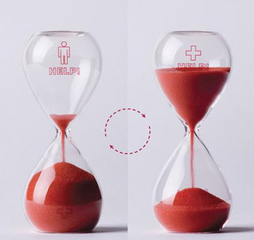

Donor Facts
 A newborn baby has about one cup of blood in his body
A newborn baby has about one cup of blood in his body
- Someone needs blood every two seconds.
- About 1 in 7 people entering a hospital need blood.
- Four main red blood cell types: A, B, AB and O. Each can be positive or negative for the Rh factor. AB is the universal recipient; O negative is the universal donor of red blood cells.
- Dr. Karl Landsteiner first identified the major human blood groups – A, B, AB and O – in 1901.
- One unit of blood can be separated into several components: red blood cells, plasma, platelets and cryoprecipitate.
- Red blood cells carry oxygen to the body's organs and tissues.
- Red blood cells live about 120 days in the circulatory system.
- Platelets promote blood clotting and give those with leukemia and other cancers a chance to live.
- Plasma is a pale yellow mixture of water, proteins and salts.
- Plasma, which is 90 percent water, makes up 55 percent of blood volume.
- Forty-two days: how long most donated red blood cells can be stored.
- Five days: how long most donated platelets can be stored.
- One year: how long frozen plasma can be stored.ealthy bone marrow makes a constant supply of red cells, plasma and platelets.
- Children being treated for cancer, premature infants and children having heart surgery need blood and platelets from donors of all types, especially type O.
- Thirteen tests (11 for infectious diseases) are performed on each unit of donated blood.
- Blood centers often run short of types O and B red blood cells.
- Blood makes up about 7 percent of your body's weight.
